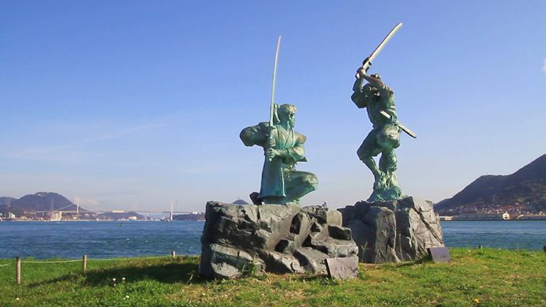

The legendary duel between Sasaki Kojiro and Miyamoto Musashi is one of the most famous duels in Japanese history. The duel took place on April 13, 1612, on the island of Ganryu. The battle is also commonly referred to as the "Battle of Ganryu". The details of the duel have become muddled by historical and legendary accounts. One popular version of the story is that Musashi purposefully arrived late to the story to aggrivate Kojiro. Supposedly, Musashi carried a wooden sword (bokken) in place of a traditional katana to engage Kojiro in combat.
In a turn of events, Musashi struck Kojiro down using a technique that took advantage of Kojiro's long sword.
The duel between the two is oftentimes romanticized and portrayed in Japanese art, literature, and film. Musashi's unorthodox tactics and victory over Kojiro have become iconic symbols of strategy and character.
